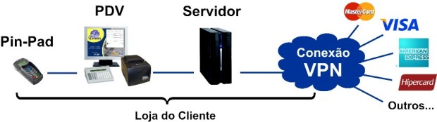

O que é TEF e Automação Comercial?
Sistema TEF
Os sistemas de pagamentos por cartões de crédito e débito, além dos sistemas de pagamentos usando tickets refeição, estão se tornando cada vez mais populares. Como um mercado em crescimento, as opções para facilitar a oferta dessas formas de pagamento aos clientes estão cada vez mais modernas, incluindo até sistemas integrados aos pontos de venda para agilizar e facilitar os processos de venda de produtos e serviços. E um desses meios são os sistemas TEF.
Automação Comercial
A automação começa com a implantação de equipamentos, e a substituição dos procedimentos e rotinas manuais por informatizados, até chegar à utilização de ferramentas que possibilitam um maior controle e uma melhor gestão do negócio, obtendo maior rentabilidade e competitividade.
Exemplo de funcionamento Automação Comercial + Sistema TEF
